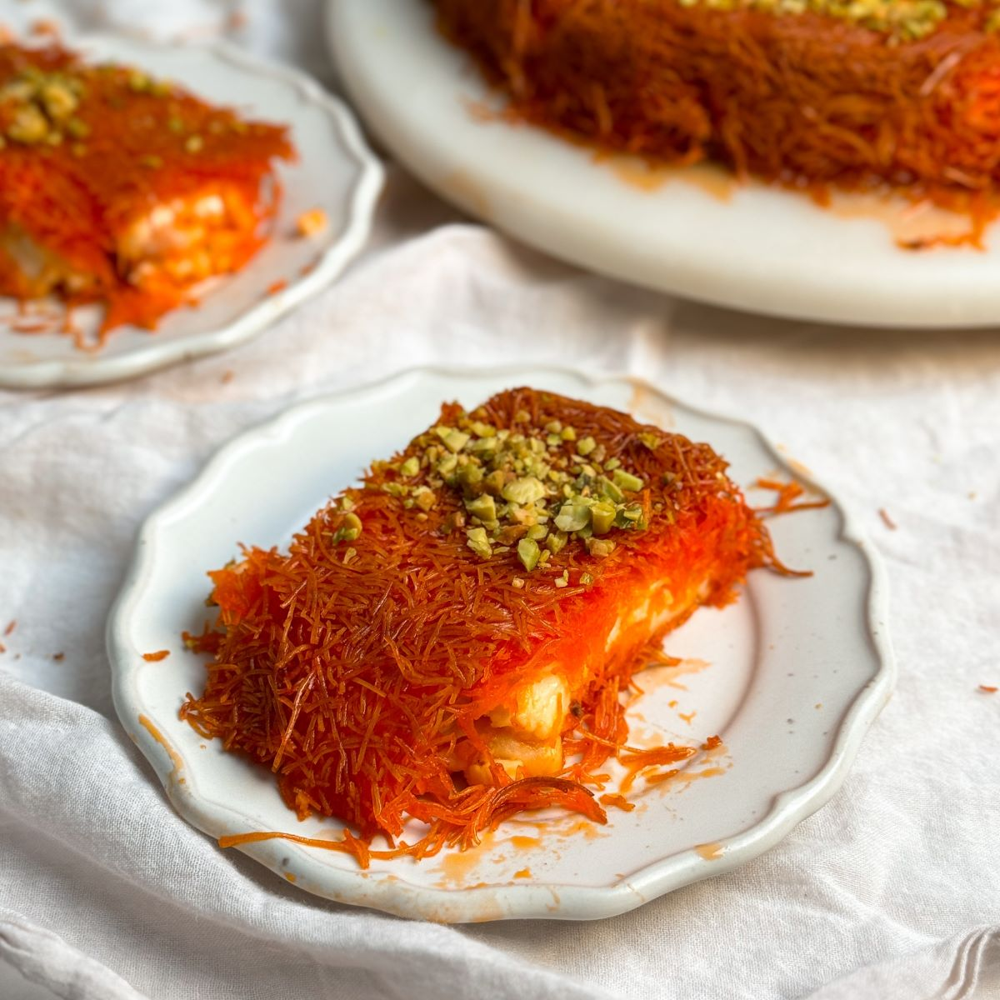

Knafeh

Aunt Mona's Knafeh
There is no knafeh that compares to my Aunt Mona's knafeh at Christmas. And now my sister Hannah and I make it too!
Ingredients
- Shredded philo dough
- Butter
- Sweet cheese
- Simple Syrup
- Rose Water
Recipe
- Shred the shredded philo dough
- Melt butter in a large pan and lightly brown the philo dough in the butter
- Butter the cooking pan
- Layer the bottom of the pan with the browned philo dough
- Layer the sweet cheese on top of the first layer
- Brown the second half of the philo dough and layer it on top of the dish
- Bake in the oven
- Serve with syrup to taste